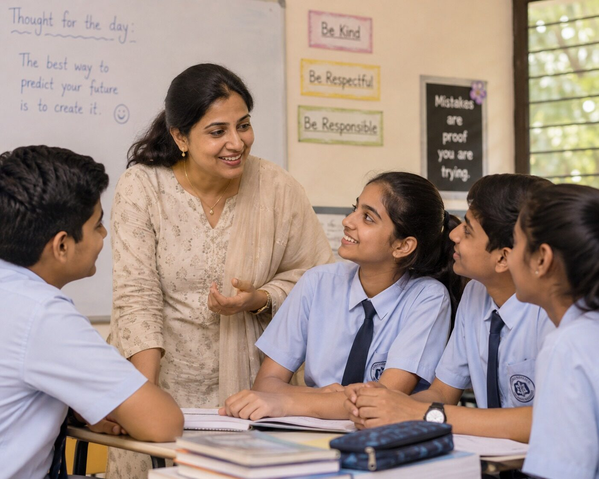

Student wellbeing through teacher development
We help schools develop self-aware, emotionally regulated and empathetic teachers who create classrooms where students feel seen, heard and valued.

The classroom today
?
Are your students finding it increasingly difficult to cope with stress?
?
Are teachers spending more time managing classroom behaviour than teaching?
?
Are teachers finding it challenging to respond calmly to students' emotional and behavioural needs?
These challenges are interconnected.
A child's experience of school is shaped not only by what is taught, but also by how they are understood, supported and responded to.
We believe meaningful change begins with the adult in the classroom.
Why it matters
Teachers are at the heart of every school.
They influence how children experience learning, relationships, challenges and themselves.
Yet teachers are rarely given structured opportunities to understand their own emotional responses, recognise their triggers and reflect on how these influence their interactions with students.
Aarunya Innerworks brings this important dimension into teacher development. We help teachers move beyond managing classroom behaviour towards understanding the child behind the behaviour.
Our focus is on developing teachers who are more self-aware, emotionally regulated and empathetic.
Our approach
Meaningful teacher development goes beyond sharing information or conducting one-off workshops. Our approach combines experiential learning, personal reflection, practical classroom application and continued support.
We begin with the teacher's own emotional awareness and wellbeing.
Teachers explore, practise and reflect rather than simply receive information.
Guided coaching and peer engagement help teachers sustain their learning.
Our work is research-informed and adapted to the realities of Indian classrooms.
Our programme for schools
Aarunya offers an experiential teacher development programme for schools that want to make student wellbeing an integral part of everyday classroom practice.
01
Teachers build self-awareness and emotional regulation, starting with their own responses and triggers.
02
Teachers carry what they have learnt into everyday classroom practice.
03
Coaching with an Aarunya facilitator and peer cohort meetings help the learning last.
04
Leadership buy-in, links to existing school practices and SEL champion teachers build a whole-school culture.
Outcomes
What schools are saying
“I now listen to understand, reflect, and respond to my students with a lot more kindness.”
“The teachers are successfully implementing the strategies learnt from here in their classes.”
About the founder
Founder, Aarunya Innerworks
I bring over 20 years of experience across the education ecosystem as a teacher, trainer and school development leader, working with teachers and school leaders to strengthen professional development and teaching and learning practices.
Working closely with educators, I have come to recognise that teachers need more than subject knowledge and classroom management strategies. They need opportunities to understand themselves, develop emotional awareness and build meaningful relationships with their students. My work in Social and Emotional Learning has deepened this belief.
I founded Aarunya Innerworks to bring this dimension into teacher development, so that every classroom can be a place where students feel supported, understood and valued.
If your school believes that student wellbeing begins with the adults who shape children's everyday experiences, we would love to start a conversation.
Let's explore how Aarunya Innerworks can support your teachers and your school community.
Start a conversation